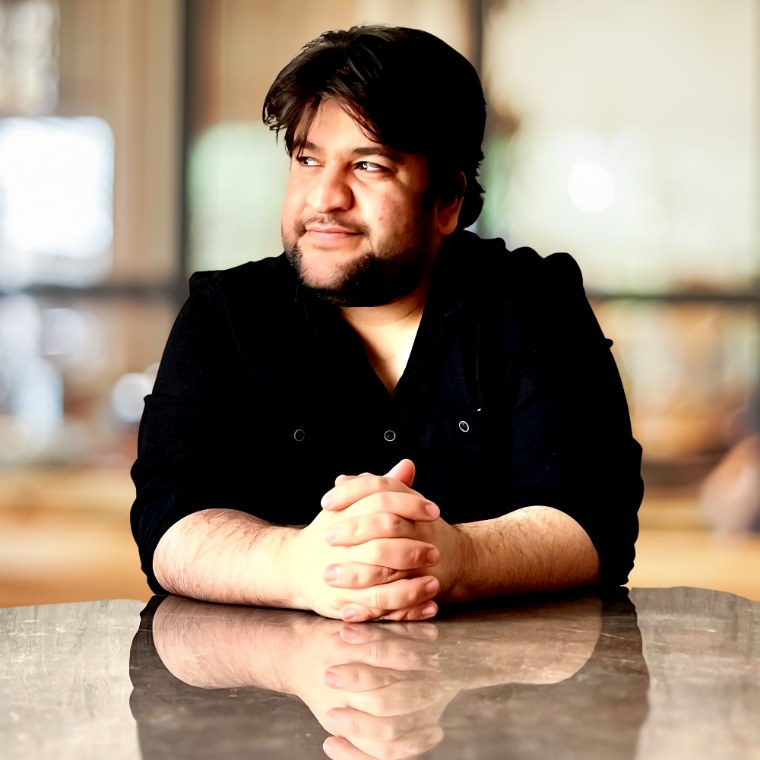
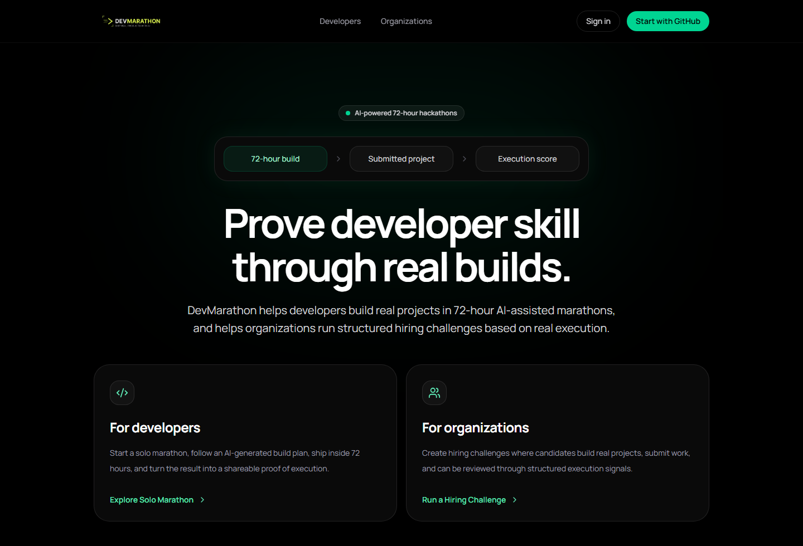
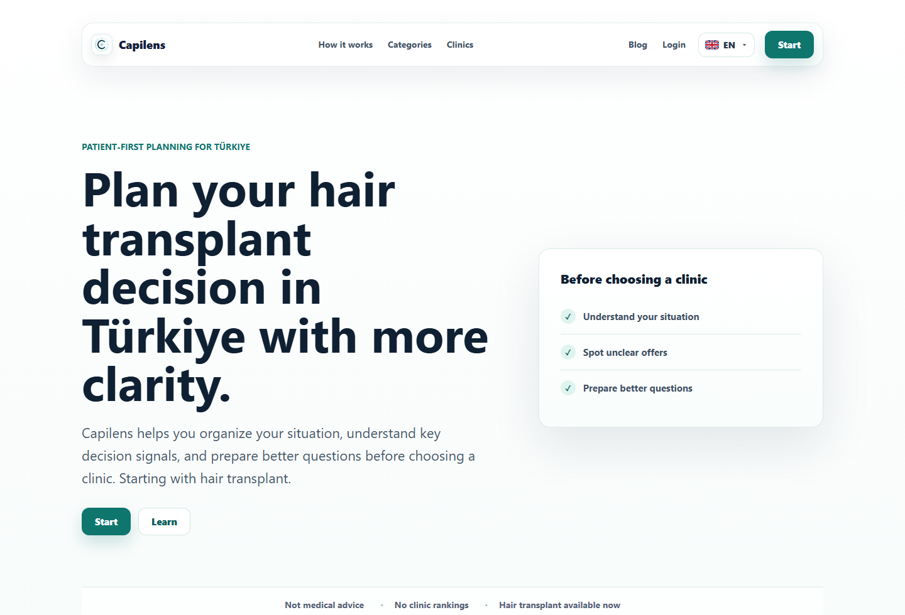
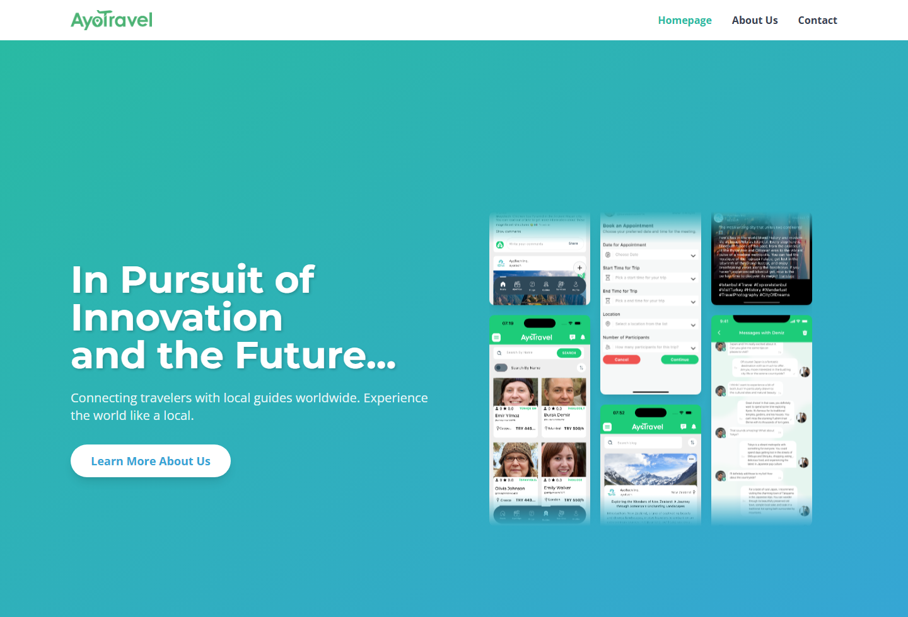

01
Flagship venture
DevMarathon
Structured software challenges that turn developer execution into visible evidence.
Visit DevMarathonTechnical founder / Product builder
Building products around execution, trust, and clearer decisions.
I work across developer evaluation, medical travel decision support, and travel technology through DevMarathon, Capilens, and AyoTravel.

Current ventures
Each product sits in a different market, but the work is connected by the same product instinct: make messy, invisible, or high-friction decisions easier to examine.
Flagship venture
Structured software challenges that turn developer execution into visible evidence.
Visit DevMarathonAI-assisted decision support
Decision support for people evaluating medical treatment options abroad, starting with hair transplant planning in Türkiye.
View CapilensTravel technology
A travel technology platform connecting travelers with local expertise, now being reconsidered for a more AI-native direction.
Explore AyoTravel01 / Flagship venture
DevMarathon gives developers structured, time-boxed software challenges where the work itself becomes the evidence. It is being shaped for individual builders, companies, schools, and communities that need clearer ways to evaluate practical project delivery.

Founder perspective
How can software turn fragmented information or invisible effort into something people can understand and act on? DevMarathon approaches this through execution evidence. Capilens approaches it through decision support. AyoTravel approaches it through local knowledge and travel coordination.
02 / Decision support
Capilens is AI-assisted decision support for international patients considering treatment abroad. The first focus is hair transplant planning in Türkiye: organizing clinic information, noticing unclear signals, and preparing better questions before booking.

03 / Travel technology
AyoTravel began as a mobile marketplace connecting travelers with licensed local guides. It brought together guide discovery, profiles, messaging, appointments, payments, user-generated content, and multilingual product flows. The next direction is being reconsidered around more AI-native travel experiences.

Background
My product background began with mobile development and expanded into marketplace mechanics, authentication, payments, booking flows, messaging, backend integrations, and AI-assisted product workflows. The useful part is not the stack itself; it is the ability to move from product ambiguity to working systems.
Mobile apps, marketplace flows, booking logic, messaging, multilingual interfaces, and product operations.
Flutter, Firebase, API integrations, authentication, payment flows, and end-to-end release work.
Execution-based developer evaluation, AI-assisted decision support, and software that helps people compare complex options more clearly.
Founder journey
Built and launched a travel marketplace product across mobile, content, guide discovery, payments, and communication flows.
Developing a platform for practical software challenges and clearer evaluation of real project execution.
Building a careful decision-support product for a high-trust medical travel context, with clear boundaries around what the product does and does not do.
Profiles
A restrained set of links for product, code, and professional context.